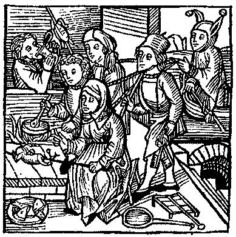

33. A busy hearth. From Medieval Life Illustrations.
THIS GALLERY'S IMAGES: BACK | NEXT
Animals & Agriculture |
Brewing
& Drinking | Dining & Eating
| Feasts & Feasting
Foods & Foodstuffs | Hunting
& Fishing | Kitchens, Cooking, & Equipment
| Markets
A Canterbury Calendar
A Feast For The Eyes
© 1997-2002 James L. Matterer